# Design Patterns - Adapter et Decorator
### Sommaire Des questions ! Adapter Decorator Conclusion
## Des questions !
### Questions - SOLID ? <!-- .element: class="fragment" --> - DRY ? <!-- .element: class="fragment" -->
### Questions - L'héritage ? <!-- .element: class="fragment" --> - Quand l'utilisez-vous ? <!-- .element: class="fragment" --> - Quand devrait-on l'utiliser ? <!-- .element: class="fragment" --> - Quand devrait-on NE PAS l'utiliser ? <!-- .element: class="fragment" -->
### Questions - Qu'est ce que la composition ? <!-- .element: class="fragment" --> - La différence avec association / agrégation <!-- .element: class="fragment" -->
### Questions - Connaissez-vous adapter et decorator ? <!-- .element: class="fragment" --> - Quels problèmes viennent-ils résoudre ? <!-- .element: class="fragment" --> - A quel type de patron de conception appartiennent-ils ? <!-- .element: class="fragment" -->
## L'héritage > En programmation orientée objet, l’héritage est un mécanisme qui permet, lors de la déclaration d’une nouvelle classe, d'y inclure les caractéristiques d’une autre classe. #wikipédia
### L'héritage > 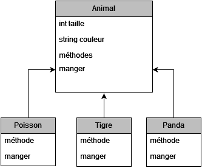
### L'héritage > - Nous évite de réécrire des méthodes tout en donnant la possibilité de les surcharger > - Nous couple à nos parents
## Design Pattern - Adapter > Adapter is a structural design pattern that allows objects with incompatible interfaces to collaborate.
### Adapter - Interfaces incompatibles > Quel est le problème > > Notion d'association d'objet non interoperable
### Adapter - Interfaces incompatibles > On peut toujours bricoler... >
### Adapter - Interfaces incompatibles > Ou bien utiliser un design pattern > 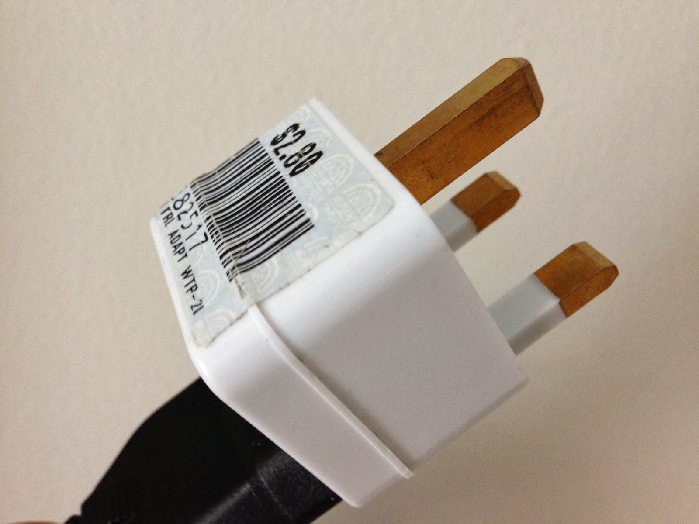
### Design Pattern - Adapter > T'es bien gentil mais au final tu n'as pas changé grand chose ?
### Adapter - Comportement > Création d'un jeu permettant aux joueurs d'incarner un chasseur qui chasse des lions.
### Adapter - Comportement > à la chasse aux lions... 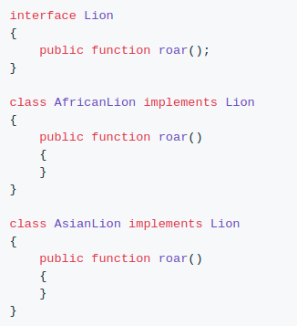
### Adapter - Comportement > Un chasseur allant chasser... 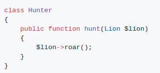
### Adapter - Comportement > Nouvelle version du jeu, à la chasse aux chiens !
### Adapter - Comportement > On s'adapte ! > 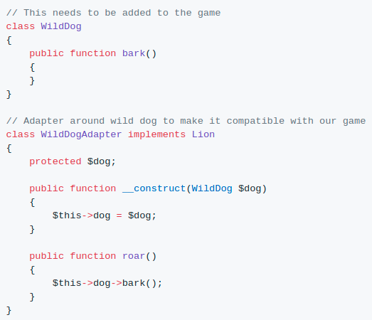
### Adapter - Comportement > Notre client pense faire rugir des chiens alors qu'en réalité, ils aboient. > 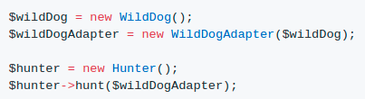
### Adapter - Code > De la théorie encore et toujours, on veut un exemple d'implémentation !
## Design Pattern - Decorator > Decorator is a structural design pattern that lets you attach new behaviors to objects by placing these objects inside special wrapper objects that contain the behaviors.
### Design Pattern - Decorator > L'exemple de la machine à café > 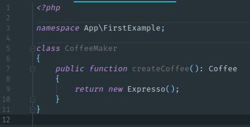
### Decorator - Machine à café > Ne propose que des expressos sans sucre ni lait ni rien... > 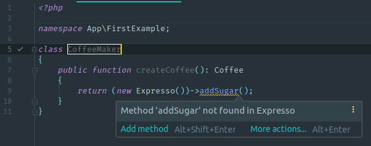
### Decorator - Machine à café > Nouveau module d'ajout de sucre
### Decorator - Machine à café > 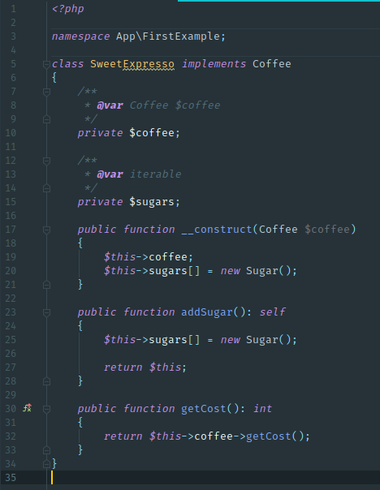
### Decorator - Machine à café > 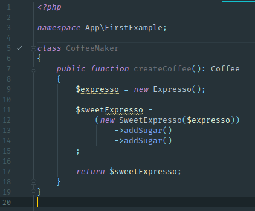
### Decorator - Machine à café > Nouveau module de triple chantilli !
### Decorator - Machine à café > 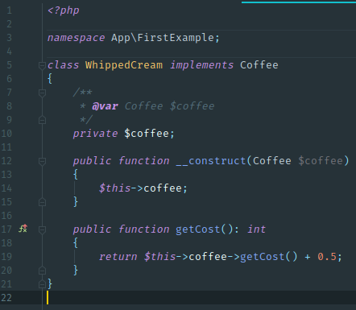
### Decorator - Machine à café > 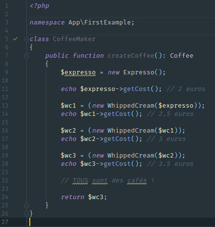
### Decorator - Machine à café > Système à faible couplage et se versionne facilement (exemple : changement de marque de sucre)
### Design Pattern - Decorator > Regardons un cas plus concret dans le monolith.
## Une petite conclusion ... Que doit-on en retenir ?
## Prochain sujet Design Patterns ? - Observer et Mediator - Factory et Builder - Autre ?
## Sources > https://github.com/kamranahmedse/design-patterns-for-humans